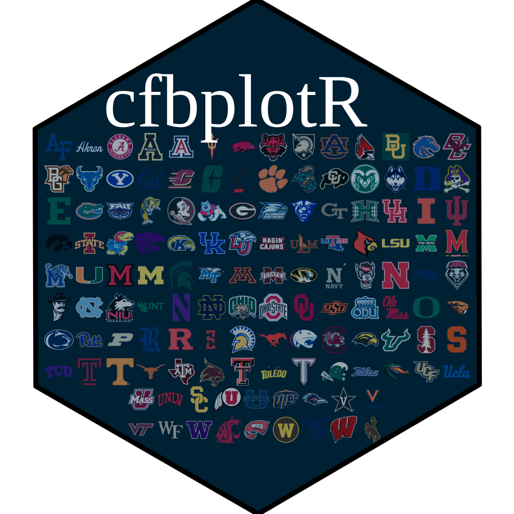

cfbplotR: CFB Logo Plots in 'ggplot2'
Source:R/cfbplotR-package.R, R/geom_cfb_wordmarks.R
cfbplotR-package.RdA set of functions to visualize College Football analysis in 'ggplot2'.
Author
Maintainer: Saiem Gilani saiem.gilani@gmail.com
Authors:
Jared Lee 13jaredlee@gmail.com
Sebastian Carl mrcaseb@gmail.com
Other contributors:
Saiem Gilani saiem.gilani@gmail.com [contributor]